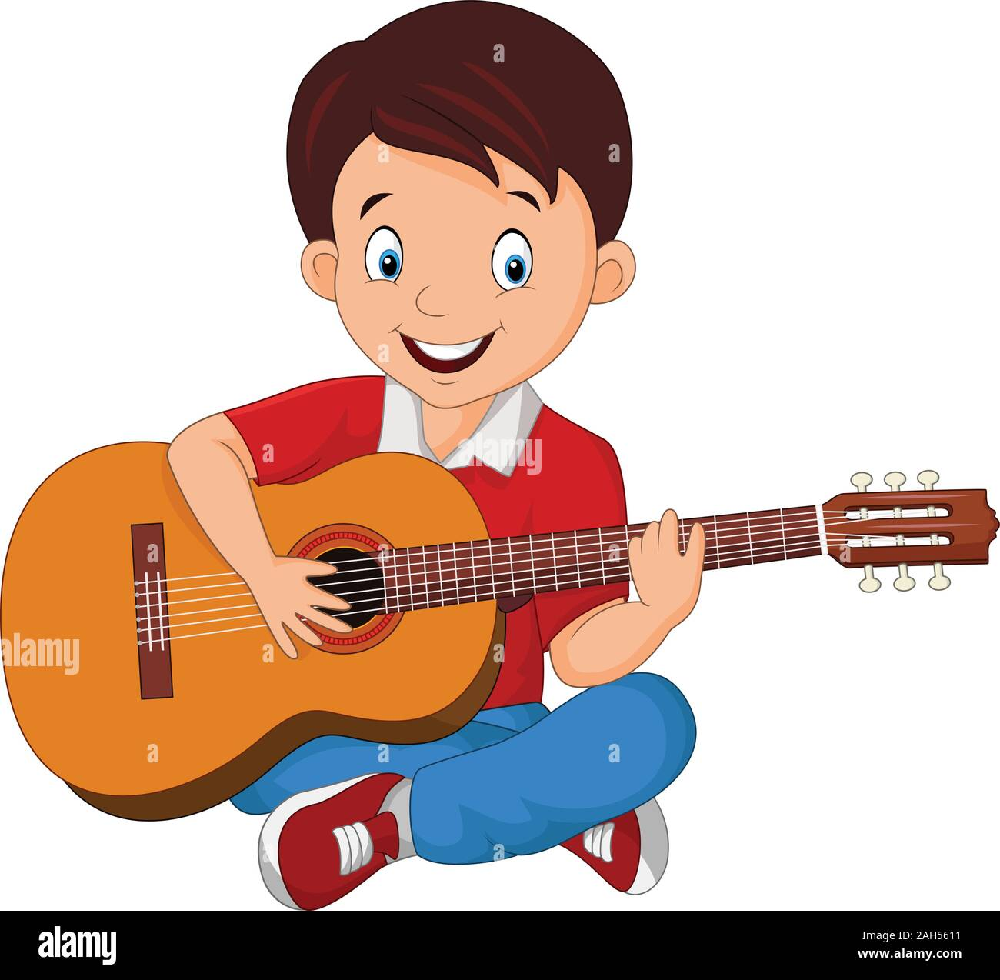

High school
He started high school at the age of fourteen.
He was also a good student there, always excellent, even at the end of the fourth grade he had all fives except for statistics where he had a three,
mostly because of his behavior, because he was also restless in class, and even expelled from classes. Because at the Čačak Economic High School, it
was not clear to him how someone could not learn what was required of the students, and that was minimal, some professors even told in advance what
they were going to test the students for the next class. Until the third grade of high school, he played basketball and was just as good,
even though he was kicked out of the team from there, through his own fault. When he wanted to return to the sport, he approached the coach and
said that he apologized for his actions, and the coach said that he expected an earlier apology, and that he could join the team, but start from
the beginning. He quickly improved and returned to the starting five of the team again. However, when it was chosen which of the players would go
on to the first team, as a junior, he was not selected. That made him a little angry, and when he saw who he was training with, he approached the
coach and said that he was leaving basketball and wanted to devote himself to school. 
In the meantime, he learned to play the guitar, not perfectly,
but enough for himself, he even founded a band with three other friends, where he played and sang, but it quickly fell apart, because they all went
to college in Belgrade. He didn't have a girlfriend in high school, but he hung out with girls because there were more girls than boys at school.
He was also a rebel at school, because he learned the material on time, and showed up to answer questions, and got good grades, mostly A's.
Then he gets bored in class and starts talking to someone else from the class or jokes with the other students. He was not afraid of the professor.
They also had a public address system at school, where music could be played. And there were two other friends with him. They played domestic rock and roll,
as well as foreign ones. He graduated with a four as a grade, and that from the subject where he had a conflict with the professor precisely because of the
restlessness he had. He mastered the Serbian language well, and the professor liked his graduation thesis. This is mostly the time he spent in high school,
and his own sister was already at the Faculty of Technology in Belgrade as an excellent student. She lived in the student dormitory, and when he took the
entrance exam for the university, he spent the night with her. And then her then-boyfriend took him to the facility where the entrance exam for the university was
taking place. And that was something big for him, which he saw for the first time in life.